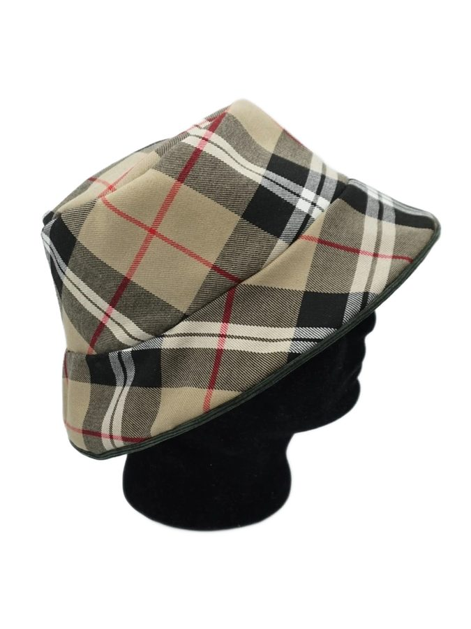

Guide du bob
Un bob est un chapeau à bord étroit, incliné vers le bas. Ce guide explique les réglages de l'assistant et mes choix de couture : un bob réversible (un tissu différent de chaque côté), avec un passepoil en tissu contrasté et un minimum de coutures visibles. Il s'appuie sur mes vidéos, en anglais : les liens sont indiqués dans chaque section.


Les trois pièces
Le bob se compose de trois pièces : le dessus (la couronne : un disque), la calotte (le tour de tête) et le bord. La calotte et le bord sont des cônes tronqués. Dans mes vidéos, en anglais, « crown » désigne la calotte et « top » le dessus.
Vidéo : conception et patrons (Designs & Patterns) · Vidéo : mes bobs (caractéristiques)
Les réglages et leurs effets
Le tour de tête et l'aisance donnent le diamètre du chapeau à l'endroit de la tête : prévoyez 2 cm d'aisance, 4 cm au maximum selon la coiffure portée dessous. Plus l'angle de la calotte est grand, plus les côtés sont droits ; plus la largeur de la calotte est grande, plus le chapeau est haut. Le dessus se déduit du tour de tête, de l'angle et de la largeur de la calotte : la coupe affichée sur la page se redessine à chaque changement, pour voir l'effet de vos choix. Plus l'angle du bord est grand, plus le bord retombe.
Une ou deux pièces, coutures visibles
Les faces externe et interne du bob peuvent chacune être conçues en 1 ou 2 pièces. En une pièce, la calotte et le bord n'ont qu'une seule couture visible ; avec deux pièces, deux coutures sont visibles. Habituellement, un bob en a deux : les miens n'en ont qu'une sur la calotte et une sur le bord, et aucune sur la circonférence du bord. Le patron en deux pièces est plus petit, ce qui peut économiser du tissu ; la version en une pièce est plus élégante et convient mieux aux grands motifs, mais elle consomme plus de tissu. Les difficultés de couture sont les mêmes.
Les coutures visibles dépendent aussi du montage du bord. Dans la méthode du « gros ballon », seul l'extérieur du bord est cousu : les deux faces du bord ne sont pas attachées, d'où un manque de structure, que l'on compense par des surpiqûres autour du bord. Dans l'autre méthode, on termine d'abord le bord, en cousant aussi son intérieur, puis on le coud sur les deux calottes. Le passepoil ne change rien à ce processus.
Vidéo : réduire les coutures visibles
Tissus, entoilage et coupe
Découpez les pièces. Repassez, puis entoilez si nécessaire : l'entoilage dépend du tissu, il est nécessaire quand le tissu est trop souple. Dessinez les pièces sur le tissu du dessus, puis découpez-les au cutter à roue. Faites de petites entailles autour des pièces, dans la marge de couture : elles aident beaucoup à l'assemblage.
Vidéo : coupe, couture et assemblage (Cutting, Sewing & Assembling)
Le passepoil
Le passepoil est une bande de tissu étroite repliée sur un cordon, pour une touche de raffinement. On en trouve de tout prêts ; le faire soi-même permet de choisir la couleur et coûte moins cher, mais demande plus de temps. Je préfère une couleur contrastée, dans un tissu assez robuste pour résister aux frottements, mais pas trop épais pour que le passepoil reste discret. J'utilise un cordon élastique de 2 mm et un pied pour fermeture éclair.
Contrairement au conseil habituel, je coupe la bande dans le droit fil et non en biais : cela économise du tissu. Sa longueur est le diamètre extérieur du bord plus quelques cm ; sa largeur, 3 à 4 cm. Cousez au plus près du cordon, sans vous presser, puis crantez le passepoil.
Fixez-le à l'extérieur de la première pièce du bord, en commençant la couture à 2 cm de la couture du bord et en l'arrêtant à 2 cm de celle-ci. Pour fermer la jonction : coupez le cordon au niveau de la couture du bord, ainsi que l'excédent de tissu ; de l'autre côté, coupez aussi le cordon au niveau de la couture (sans chevauchement) ; repliez le tissu vers l'intérieur en formant un pli aligné avec la couture, qui recouvre l'excédent, et cousez les deux extrémités.
Posez ensuite la seconde pièce du bord : les coutures d'extrémité des deux pièces doivent être opposées, ce qui réduit l'épaisseur. Placez l'endroit à l'intérieur et l'entoilage à l'extérieur, et cousez au plus près du cordon ; si une première couture n'est pas assez proche, faites-en une seconde. Repassez pour aplatir le tissu près du passepoil. Reste à choisir entre deux finitions : avec ou sans surpiqûres sur le bord. Je préfère éviter les coutures visibles.
Vidéo : passepoil (Piping Trim Tutorial)
Assembler la calotte et le dessus
Cousez les extrémités des pièces de la calotte et du bord, puis repassez pour aplatir les coutures. Des repères d'assemblage divisent le tour en quartiers, et leur nombre dépend du nombre de pièces : en une pièce, 3 repères d'assemblage par côté (le 4e est l'emplacement de la couture) ; en deux pièces, un seul repère par côté (les autres repères sont les emplacements des coutures). Fixez le dessus à la calotte avec des épingles, repère sur repère d'abord, puis dans les intervalles : plus il y a d'épingles, mieux c'est. Répartir uniformément les deux pièces est essentiel pour éviter les plis. Un peu de repassage met le chapeau en forme.
Assembler le bord, retourner, fermer
Pincez ensemble les coutures d'extrémité du bord et de la calotte du même tissu, puis répartissez uniformément les deux pièces. Cousez une pièce à la fois : il y a beaucoup d'épaisseurs (bord, calotte 1 et calotte 2). Cousez le bord sur la première calotte, puis le tout sur la seconde. Laissez environ 7 cm non cousus pour retourner le chapeau. Retirez les épingles, trouvez l'ouverture et retournez le chapeau en commençant par le bord, sans vous presser. Les coutures de chaque face doivent être à l'opposé l'une de l'autre, pour éviter les surépaisseurs. Repassez des deux côtés. On ferme l'ouverture à la couture ou à la colle ; mes bobs étant réversibles, je préfère la colle spéciale pour tissu, plus discrète, en épinglant pendant le séchage.
Vidéo : coupe, couture et assemblage
Les vidéos sont en anglais ; les sous-titres automatiques peuvent être traduits en français depuis YouTube.